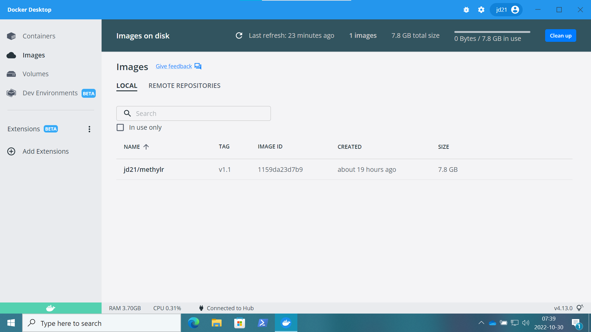
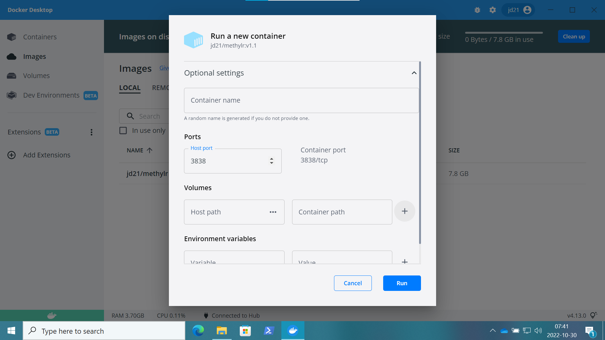

Appendix B — Use of Docker Container
B.1 On Windows
Danger
PLEASE NOTE: Only AMD64 OS
- Please make sure you have installed latest version of Docker Desktop on your Windows machine.
- Using ‘command-prompt’ or ‘Powershell’, run the command
docker pull jd21/methylr:latest. - Open Docker Desktop, under the tab ‘images’, on the LOCAL images, the docker image will be available as shown in the following figure

- Now, click on the RUN, it will open the ‘Optional settings’. Under the ‘Optional settings’, select the ‘Port (Host port)’ and write 3838 and click ‘RUN’.

- Click on the Containers on the side tab and then click PORT(S) ‘3838:3838’. The default web-browser will open and in a few minutes will start the app (It will take approximately 1-3 minutes to view the app).
Note
NOTE: You can copy http://localhost:3838 after running the container and open it on other web-browser to run the app.

B.2 On MacOS
Danger
PLEASE NOTE: (Intel, Only AMD64 OS - not supported on Apple M1/M2 processors)
- Please make sure you have installed latest version of Docker Desktop on your MacOS.
- Run the command,
docker pull jd21/methylr:lateston Mac terminal. - If you are using the Docker Desktop to use methylR, please follow the instructions from 3 to 5 as mentioned above for Windows.
- Alternatively, if you want to use the MacOS terminal to run the app (Only supported on Intel AMD64 OS architecture), please use this command
docker run --rm -p 3838:3838 jd21/methylr:latestdirectly and after pulling all the images by docker, terminal will display
[2022-10-30T07:57:41.311] [INFO] shiny-server - Shiny Server v1.5.18.979 (Node.js v12.22.6)
[2022-10-30T07:57:41.312] [INFO] shiny-server - Using config file "/etc/shiny-server/shiny-server.conf"
[2022-10-30T07:57:41.342] [WARN] shiny-server - Running as root unnecessarily is a security risk! You could be running more securely as non-root.
[2022-10-30T07:57:41.345] [INFO] shiny-server - Starting listener on http://[::]:3838- Now, open the web-browser and run
http://localhost:3838will load the app within 1-3 minutes.
Note
PLEASE NOTE: It may possible that you run the docker container on MacOS Apple M1, but the application may not work as expected. We strongly recommend to use AMD64 OS architecture to run methylR
B.3 On Linux (Ubuntu 20.04LTS)
- If you want to use the linux terminal to run methylR, use the following command on the terminal
docker run --rm -p 3838:3838 jd21/methylr:latest- If you want to use the Docker Desktop for Linux, first pull the docker container using
docker pull jd21/methylr:latestfrom terminal and then follow Step 3-5 as mentioned above for Windows.
Note
- Please contact the IT support if Docker is running properly. You can also contact the developers using the GitHub or the Google groups or directly email the developer.
- If after uploading the data for methylation analysis (see Chapter 1), the browser get disconnected, please check you have installed the docker or docker-desktop with administrative privilages. From terminal, user can run,
$ sudo usermod -aG docker $USER
or
$ sudo chown $USER /var/run/docker.sockCopyright © 2022-2023. Massimiliano Volpe and Jyotirmoy Das.